At sunset,
the birds
flew to their nests in the
Grand old Banyan tree. Sani looked at
this with great curiosity everyday.
O! so many birds of different
size and colour…!
Even their sounds are different.
Do you also like birds?
What are their common characteristics?
Environmental Science
• have feathers on the body.
• lay eggs.
•
40
Page 41
Figure fig_ch04_p041_01 (Page 41)
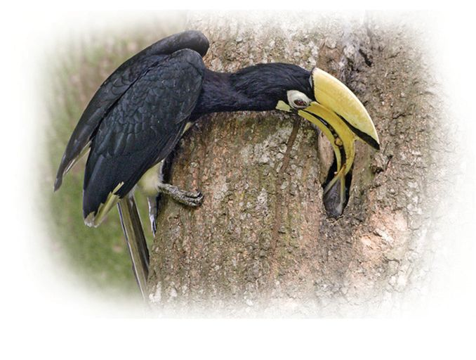
Figure fig_ch04_p041_02 (Page 41)
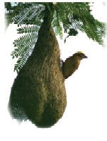
Figure fig_ch04_p041_03 (Page 41)
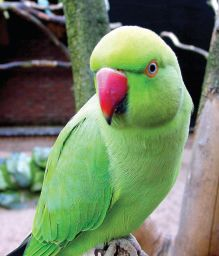
Figure fig_ch04_p041_04 (Page 41)
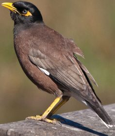
Figure fig_ch04_p041_05 (Page 41)
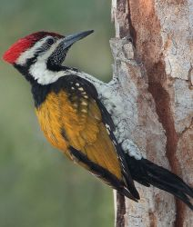
Figure fig_ch04_p041_06 (Page 41)
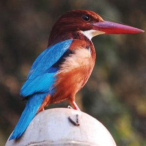
Figure fig_ch04_p041_07 (Page 41)
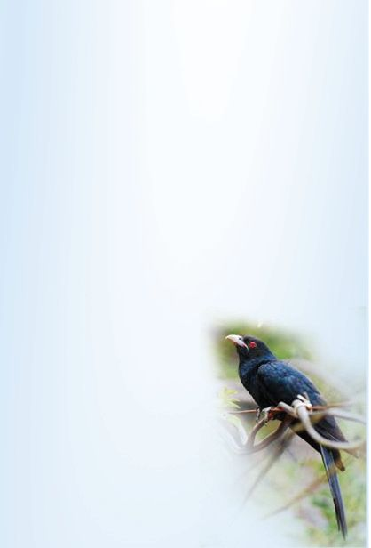
Figure fig_ch04_p041_08 (Page 41)
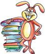
Figure fig_ch04_p041_09 (Page 41)
Can you name them?
Mention the names of the birds seen in your locality.
Look at the pictures of some birds…
Write their names in the boxes below the picture.
Nest makers
Anyone who sees the nests of birds
will be wonderstruck. They are so
beautiful.
Where do birds build nests?
in holes on tree trunks.
•
in burrows.
•
Those who do not
build nests!
The cuckoo does not build a
nest or look after its young
ones. It lays eggs in the crow's
nest. Many birds do not have
the habit of building nests.
Some birds lay eggs in nests
left by other birds.
Why do birds build nests?
Even birds that build nests do not live
in them always.
41
Wonder World of Birds
•
Page 42
Figure fig_ch04_p042_01 (Page 42)
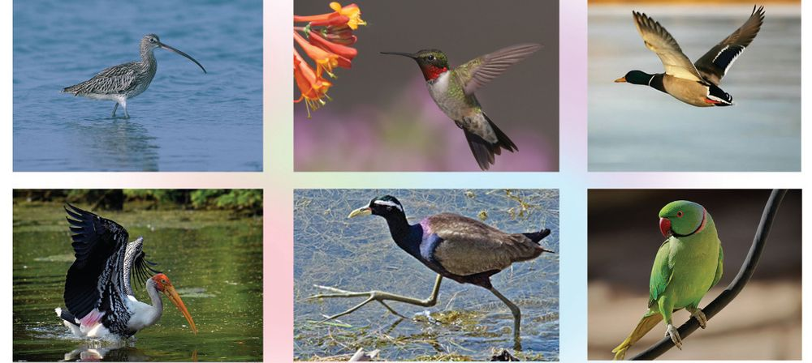
Figure fig_ch04_p042_02 (Page 42)
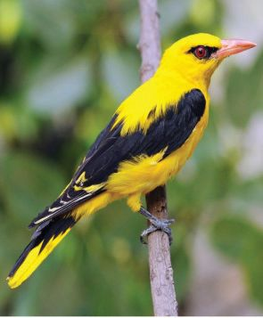
Figure fig_ch04_p042_03 (Page 42)
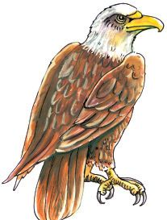
Figure fig_ch04_p042_04 (Page 42)
Guests
Are all birds seen during all seasons?
Why are they not seen in all seasons?
Have you seen the bird in the picture?
This is the Golden Oriole (manjakili).
They are visitors who come from far off places.
But they return before the monsoon in our
country.
Some birds come from far off places in certain
seasons. They are known as migratory birds.
Can travel and catch prey
Look at the pictures of some birds.
What are the physical features which enable
these birds to move and to catch prey?
How do shape, size, legs, wings etc., help birds to fly?
Environmental Science
Note down the points in your environment diary.
Have you seen the eagle snatch away chicks and
other creatures?
What are the peculiarities of the eagle? How do these
peculiarities enable the eagle to catch prey?
42
Page 43
Figure fig_ch04_p043_01 (Page 43)
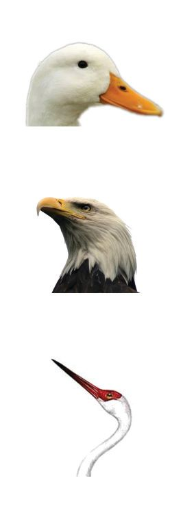
Figure fig_ch04_p043_02 (Page 43)
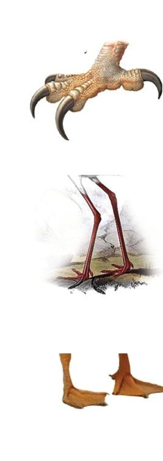
Figure fig_ch04_p043_03 (Page 43)
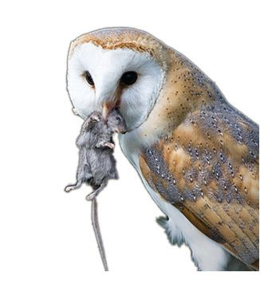
Figure fig_ch04_p043_04 (Page 43)
Observe the pictures.
Match the beaks and the legs.
Note down in the environment diary how beaks and legs help birds
in gathering food.
Birds and the environment
You have learnt the diversity in the world of birds.
Birds add beauty to our surroundings.
•
Preying birds like owl and eagle prevent the increase of rats.
•
Help in seed dispersal.
•
Control pests.
•
43
Wonder World of Birds
They are also useful in many ways. Let's look at them.
The number of birds that are
beneficial to the environment, is
decreasing. What could be the
reasons for this?
•
Forest department
prepares nests for House
sparrow (Angadikuruvi)
excessive use of pesticides.
Palakkad : The forest department has
started a scheme, 'Nest for a Bird',
for angadikuruvi, an endangered
species of bird.
•
•
While we watch birds...
We come across several amazing facts while watching birds.
What are the things to take care of while watching them?
Discuss with your teacher.
Write down your observations in your environment diary.
What would you include in the note?
Birds we rear
Observe the pictures of birds. Name them.
Why do we rear birds in our homes?
•
for fancy.
•
•
We learned about the diversities in the world of birds. But there
are a lot more to explore. Can you think of some more?
Birds make our world so beautiful. Can you imagine a world without
birds?
Significant learning outcomes
The learner
lists common birds in the environment.
identifies and states the fact that birds show variety in nests
and nesting habits.
identifies and notes down physical peculiarities of birds
according to their flight and food gathering habits.
engages in bird watching.
identifies and states the importance of birds.
lists down the uses of birds we rear.
Let us assess
1.
Which among the following statements is more true?
A bird's claws are seen joined by skin. That bird…..
a. will be able to fly high.
b. can swim in water.
c. can snatch away its prey.
d. cannot fly.
2.
Which is the odd one?
a. Kingfisher
b. Crane
c. King Cormorant (Water Crow)
d. Sparrow
Environmental Science
Extended activities
1.
Prepare a picture album of birds.
2.
Make models of birds using paper, coconut leaf etc.
3.
Interview 'Bird Watchers' and write a report.
4.
Write notes on the Bird Sanctuaries in Kerala.
5.
Collect information on migratory birds.
6.
Create an 'Eco Park' in your school. Make arrangements to
attract birds to the 'Eco Park'.